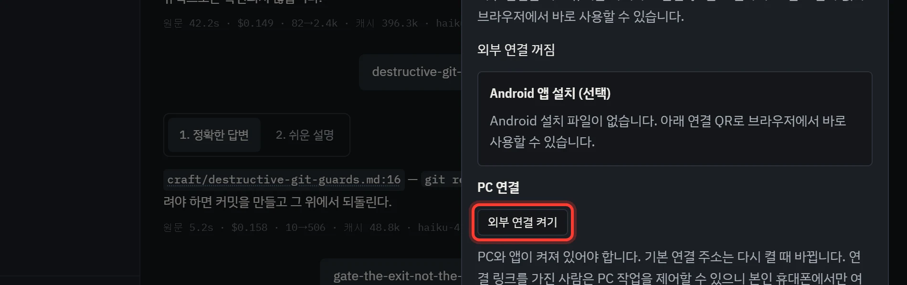

필요한 것만 골라서 세팅해요
앱 설치, 내 프로젝트에 규칙 붙이기, 휴대폰 연결은 서로 따로예요. 하고 싶은 것 하나만 해도 돼요. 모델 사용량은 각자 로그인한 Claude Code나 Codex 계정에서 나가요. 세팅이 끝난 뒤 무엇을 어떻게 말하면 되는지는 사용법에 있어요.
A데스크톱 앱
설치하고 창 띄우기
먼저 Git, Python 3.11 이상, Node.js 22.12 이상을 깔아 두세요. 그다음 명령 네 번으로 설치를 끝내고, 나머지는 창에서 눌러서 해요.
작업 에이전트는 작업 브랜치에서 전체 권한으로 일해요. 파일을 쓸 때마다 허락을 기다리지 않으니, 중요한 변경은 커밋해 두고 쓰세요.
명령으로 하는 건 네 가지예요
-
Codex나 Claude Code 설치쓸 것 하나만 깔아요. 둘 다 깔 필요는 없어요. 깔고 나면 새 터미널을 열어요. macOS·Linux의 Claude Code는 공식 안내를 따라요.
# Codex를 쓴다면 npm install -g @openai/codex # Claude Code를 쓴다면 (Windows) winget install Anthropic.ClaudeCode
-
Rust 설치앱 창을 빌드할 때 써요. 한 번만 깔면 돼요.
# Windows winget install Rustlang.Rustup # macOS·Linux curl --proto '=https' --tlsv1.2 -sSf https://sh.rustup.rs | sh
-
받아서 설치하기저장소를 받고, 패키지 · 화면 · 지도 파일까지 한 번에 준비해요. Claude Code를 쓰면
codex자리에claude를, 둘 다 쓰면both를 넣어요. 로그인이 안 돼 있으면 공식 로그인 창이 열려요.프로젝트 목록은 위키 폴더의 상위 폴더에서 찾아요. 다른 곳에 있으면 끝에--workspace "D:/작업 폴더"를 붙여요.git clone https://github.com/littleeeeebit/wiki-agent.git cd wiki-agent python tool/setup_chat.py install --agent codex
-
키 넣기위키 폴더에
.env파일을 만들고 키를 적어요. Gemini 키는 한국어 번역에 써요. 없으면 영어 원문이 그대로 나와요.Jev 키는 선택이에요. 넣으면 Jev가 판단을 기록만 하는 상태로 시작해요. 켜는 법은 ④ 묻기 · Jev에 있어요.GEMINI_API_KEY=여기에-본인-키 # 선택: Jev TYPESAFE_API_KEY=여기에-본인-키
여기부터는 화면에서 해요
-
창 띄우고 프로젝트 고르기위키 폴더의
tool/app.cmd를 더블클릭해요(macOS·Linux는tool/app.command). 처음엔 창을 빌드하느라 몇 분 걸려요.창이 뜨면 왼쪽 위 목록에서 작업할 프로젝트를 골라요.
-
지도 보기위쪽의 [지도]를 누르면 규칙과 문서가 서로 어떻게 이어져 있는지 그림으로 나와요. 지도 파일은 설치 때 만들어 뒀어요. [대화]를 누르면 돌아와요.

여기까지가 세팅이에요. 첫 질문과 첫 작업은 사용법을 따라 해 보세요.
B규칙 붙이기
내 프로젝트에 규칙 붙이기
A를 마쳤다면 명령은 더 필요 없어요. [연결]을 한 번 누르면 앱이 대상 프로젝트에 설정 파일(.wiki/adapter.toml)을 쓰고, 이 PC의 Claude Code · Codex에 훅을 걸고, 실제 세션을 한 턴씩 돌려 붙었는지 시험해요.
-
[프로젝트 · 연결] 열기왼쪽에서 [프로젝트 · 연결]을 눌러요. 작업 폴더 안의 저장소마다 위키가 붙었는지가 나와요.

-
내 프로젝트의 [연결] 누르기미연결인 프로젝트 줄 오른쪽의 [연결]을 눌러요. 훅이 다른 위키에 걸려 있으면 바꿀 줄을 전부 보여 주고 먼저 물어요. 끝나면 줄이 “연결 완료”로 바뀌어요.시험은 연결한 도구마다 모델 한 턴의 비용이 들어요.

-
새 세션에서 확인하기그 프로젝트에서 Claude Code나 Codex 새 세션을 열어요. 처음엔 프로젝트와 훅을 신뢰할지 물어요. 규칙에 관한 말을 했을 때 그 규칙이 붙어 오면 된 거예요.
앱 없이 명령으로 붙이기
채팅 앱이 필요 없다면 훅에 쓰는 패키지만 깔면 돼요. 위키는 경로가 바뀌지 않는 깨끗한 git 폴더에 두세요. 폴더 이름에 공백과 한글은 괜찮지만, 따옴표 · $ · 백틱은 안 돼요.
Windows라면Claude Code 훅은 Git for Windows의 Git Bash로, Codex 훅은 PowerShell로 돌아요. 둘 다 깔려 있어야 해요.
-
훅 패키지 깔기Python 3.11 이상에 깔아요. 아래 명령들의
python은 이 패키지를 깐 그 Python이어야 해요.python -m pip install -r requirements-hooks.txt
-
대상 프로젝트에 설정 쓰기대상 프로젝트에
.wiki/adapter.toml을 만들고, 검사 명령을 그 프로젝트의 진짜 명령으로 바꿔 적어요.Codex를 쓰면 대상 프로젝트의.codex/config.toml에[features]아래hooks = true를 더해요. 파일이 이미 있으면 덮어쓰지 말고 이 줄만 더해요.agents = ["claude", "codex"] [slots] review_dir = "artifacts/review" gate_cmd = "python -m pytest" live_cmd = "새 세션에서 실제로 확인" server_stop = "띄운 터미널에서 Ctrl+C" scratch_dirs = "artifacts/"
-
위키 버전 고정하기위키 폴더에서 커밋 번호를 읽어, 대상 프로젝트의
.wiki/wiki-revision에 한 줄로 적어요(UTF-8, BOM 없이). 팀 전원이 같은 버전의 규칙을 쓰는지 이 값으로 확인해요.# 위키 폴더에서 git rev-parse HEAD -
설치하고 확인하기위키 폴더에서 실행해요. 한 도구만 쓰면
both대신claude나codex. 다른 도구가 만든 설정은 지우지 않아요.작업트리를 자주 만든다면 PC 전체에 한 번 거는 쪽이 편해요. 새 작업트리에도 따로 설치할 필요가 없어요.# 프로젝트 하나에 python tool/setup_agents.py --project "../my-project" --agent both python tool/setup_agents.py --project "../my-project" --agent both --check # 또는 PC 전체에 한 번 python tool/setup_agents.py --global --trust-codex --project "../my-project" python tool/setup_agents.py --global --check
-
새 세션에서 확인하기
--check통과는 설정이 맞게 적혔다는 뜻일 뿐이에요. 새 세션을 열어 세션 시작에 프로젝트 문서와 상태가 들어오는지, 규칙에 관한 말에 그 규칙이 붙는지 직접 봐요.프로젝트나 위키를 옮겼다면 같은 명령으로 다시 설치해요. 위키 버전을 올릴 땐 바뀐 내용을 보고wiki-revision을 새 값으로 바꾼 뒤 다시 설치해요.
C휴대폰
밖에서 휴대폰으로 이어 보기
일은 PC가 하고, 휴대폰은 같은 화면을 브라우저로 열어 작업과 변경을 보고, 지시를 보내거나 승인해요. 모바일 데이터나 다른 Wi-Fi에서도 이어져요. VPN이나 포트포워딩은 필요 없어요.
연결 링크를 연 사람은 이 PC의 작업을 조종할 수 있어요. 남에게 보여 주지 마세요. 중간 중계 서버를 거치기 때문에 휴대폰과 PC 사이가 종단간 암호화되지는 않아요.
-
외부 연결 켜기PC 앱 왼쪽 위 톱니바퀴(설정) → 휴대폰 → [외부 연결 켜기]를 눌러요. 터널은 앱이 알아서 받아 준비하고, 준비되면 연결 QR이 나와요. 처음엔 받느라 조금 걸려요.

-
QR 찍기휴대폰 카메라로 연결 QR을 찍어 브라우저로 열어요. 앱은 깔지 않아도 돼요.링크는 5분 안에 한 번만 쓸 수 있어요. 새로 만들면 안 쓴 이전 링크는 무효가 돼요. 한 번 이어지면 같은 주소에서 30일까지 유지돼요.
-
홈 화면에 두기 (선택)브라우저가 [앱 설치]를 띄우면 눌러요. 아이폰 · 아이패드는 Safari의 공유 → 홈 화면에 추가. 주소창 없이 앱처럼 열려요.
-
안드로이드 앱 (선택)설정의 [Android 앱 설치 (선택)]에 나오는 설치 QR을 찍고, 열린 페이지에서 [APK 다운로드] → 받은 파일 열기 → 설치를 눌러요. 그다음 앱 안의 [연결 QR 스캔]으로 연결 QR을 찍어요.“기기 보호를 위해 앱이 차단됨”이 뜨면 Play 프로텍트가 처음 보는 개발자라고 알리는 거예요. 내 PC에서 받은 파일이 맞다면 [무시하고 설치하기]로 넘어가요. Play 프로텍트를 끌 필요는 없어요. 설치 파일이 없는 PC에서는 이 칸에 QR 대신 안내가 나와요.

이럴 땐 이렇게
- 끊겼어요. 화면의 [다시 연결]을 눌러요. 쓰던 글은 남고, 보낸 게 확실하지 않은 지시를 저절로 다시 보내지는 않아요.
- PC 앱을 다시 켰더니 안 이어져요. 기본 주소는 앱을 다시 켤 때마다 바뀌어요. 외부 연결을 켜고 새 QR로 다시 연결해요. 홈 화면에 둔 앱도 옛 주소에 묶여 있어서 다시 연결해야 해요.
- 휴대폰을 모두 끊고 싶어요. PC에서 [연결 끄기 · 기기 해제]를 눌러요.
주소를 고정하고 싶다면Cloudflare에 이름 있는 터널과 도메인이 있으면 주소를 고정해 다시 연결하지 않아도 돼요. 이건 터널을 직접 운영하는 사람용이라 영어 문서에만 있어요.
D계정 · 업데이트
계정 바꾸기, 새 버전 받기, 막혔을 때
로그인 확인 · 계정 바꾸기
앱을 끄고 터미널에서 해요. 계정을 바꿨다면 앱을 꼭 다시 켜요. 안 그러면 옛 계정의 대화 세션과 모델 목록을 계속 써요.
check는 로그인 상태만 봐요. 실제 답이 나오는지까지 보지는 않아요. 앱은 계정 파일이나 토큰을 읽어 어디로 보내지 않아요. 각자 자기 PC에서 자기 계정으로 써요.
# 지금 로그인 상태 보기 python tool/setup_chat.py check --agent both # 로그인하기 python tool/setup_chat.py login --agent codex python tool/setup_chat.py login --agent claude # 로그인 창을 다시 열어 계정 바꾸기 python tool/setup_chat.py login --agent codex --force-login python tool/setup_chat.py login --agent claude --force-login
새 버전 받기
새 버전이 나오면 왼쪽 아래에 카드가 떠요. [업데이트]를 누르면 받아서 바뀐 패키지와 화면을 다시 준비하고, [다시 시작]이 나오면 눌러 창을 새로 열어요. [나중에]는 그 버전만 숨겨요.
[업데이트]가 꺼져 있으면 다른 브랜치에 있거나, 커밋하지 않은 변경이 있거나, main이 갈라진 거예요. 그땐 손으로 받고 앱을 다시 켜요. 손으로 받아도 다음 실행 때 같은 준비를 해요.
# 위키 폴더에서, 앱을 끄고
git pull
python tool/setup_chat.py install --agent codex
같은 install을 다시 돌려도 기존 로그인은 그대로예요.
막혔을 때
| 이럴 때 | 이렇게 해요 |
|---|---|
| 창이 안 떠요 | 서버가 못 뜬 이유와 raw/main.err.log의 끝이 창에 나와요. 거기 적힌 원인부터 봐요. |
| CLI를 못 찾는대요 | 그 CLI를 깔고 새 터미널을 열어요. Node.js를 못 찾으면 Node.js 설치를 확인해요. |
| 로그인 창을 닫았거나 설치가 실패했어요 | 원인을 풀고 같은 install을 다시 돌려요. 기존 로그인 정보는 지우지 않아요. |
| 프로젝트가 목록에 없어요 | 프로젝트 폴더나 드라이브가 바뀌었다면 --workspace "새 폴더"를 붙여 다시 설치해요. |
| 새 PC로 옮겼어요 | .venv, web/node_modules, 대화 기록, CLI 로그인은 따라오지 않아요. 새 PC에서 설치를 처음부터 해요. |
| 화면 코드를 바꿨는데 그대로예요 | 앱을 다시 켜고 새로고침해요. |
폴더 지도
받은 저장소의 어디에 뭐가 있나요
docs/ 문서는 에이전트가 읽는 원본이라 영어예요. 사람이 할 세팅은 이 페이지에 한국어로 다 있어요. 더 깊은 내용은 앱의 [위키]에 한국어로 물으면 그 문서를 근거로 한국어로 답해요.
operator/ · craft/ | 규칙 페이지. 사람의 일하는 방식과 에이전트의 기술 |
skills/ | 절차서. 리뷰 루프, 머지 후 정리, 회고, 디자인 한 바퀴, 마크다운 쓰기 |
tool/ | 훅과 도구. 규칙 붙이기, 설치, 기록 세기, 위키 검사, 결정 기록, 자가 개선 |
tool/main/ | 앱 서버. 위키 질문, 명세, 작업 브랜치, 리뷰 루프, 계획, 리팩터링, 휴대폰 연결 |
tool/translate/ 외 | 한국어 번역(translate), 검색(search), Jev 결정(decision), 평가(eval) |
web/ · android/ | 앱 화면과 데스크톱 창, 휴대폰 앱(선택) |
docs/ | 운영 문서(영어). plans/는 계획, research/는 설계마다 남긴 조사 |
raw/ | 대화 · 리뷰 · 측정 기록. git에 올리지 않아요 |